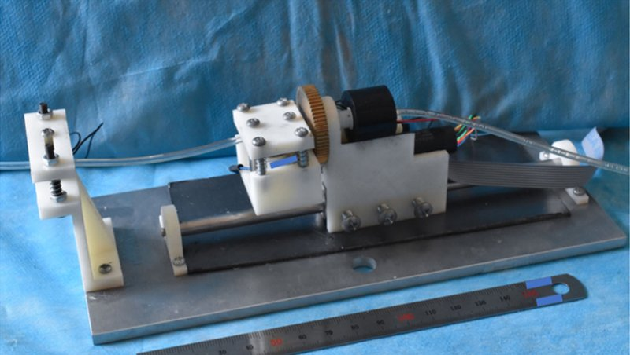

Academic bedside robots · tju_he2018
TJU linear-stepping
Tianjin University linear-stepping endovascular robot with variable-stiffness SMP catheter and FBG tip-force sensing

1 / 4


- Family
- Academic bedside robots (academic)
- Devices
- custom catheter: shape-memory-polymer tube 2.5 mm OD / 1.0 mm ID with water cooling, silicone outer sheath 5 mm x 90 mm, four FBG fibres at the tip (he2018_linear Sec. Methods)
- Degrees of freedom
- 2 (linear + rotation)
- Push
- Clamp relay
- Twist
- Rotating clamp
- Tested up to
- Phantom
- Sim-to-real
- None found — No simulation-trained controller found for this robot.
Testing
- Highest level
- Phantom
- What was tested
- vascular phantom insertion in rigid vs flexible state with tip-force monitoring (he2018_linear Fig. 11)
- Key numbers
- two electromagnet clutches (front + travel); Faulhaber LM1247-100-11 linear motor, max 100 mm per step; insertion 10 mm/s in the phantom test; SMP Tg 35 deg C; rigid catheter holds its shape against a 1.8 N·cm load (he2018_linear Abstract, Sec. Methods/Results)
Mechanism
- Push (translation)
- clamp-relay
- Twist (rotation)
- brushless DC servomotor (Faulhaber 1226S012B) turns the travel clutch on a gear pair through a conducting rotation ring (he2018_linear Sec. Linear stepping actuation unit)
- Device range
- the custom catheter above only
- Target anatomy
- aortic arch phantom (ascending/descending aorta)
Sensing and interface
- Force sensing
- distal: four FBG sensors (0.16 mm) at the catheter tip with temperature compensation
- Leader and haptics
- no (PC user interface)
- Imaging
- N.R.
- Sterility
- N.R.
Size
- Footprint (mm)
- N.R.
- Mass (kg)
- N.R.
Simulation
- Simulation model
- none found
- Sim-trained controller
- none found
Versions
- Lineage
- single version (he2018_linear)
Sources
- A linear stepping endovascular intervention robot with variable stiffness and force sensing · International Journal of Computer Assisted Radiology and Surgery, 2018 · doi:10.1007/s11548-018-1722-x [he2018_linear]
Notes
- Notes
- Distinct from A2's tianjin_song2023 (Tianjin University of Technology). Robot and actuated catheter in one system; the bedside unit is a clamp-relay drive in the Nagoya 'propelling pencil' tradition (he2018_linear Introduction).
This record
- Read level
- full
- Picture
- he2018_linear Fig. 2(b) prototype photo (native raster p. 4) ↗ — licence: publisher copyright; grade A
- Picture changes
- native extract; cropped to panel (b) and above the '(b)' panel letter; not upscaled
- Found by
- gap: Gap searches for robots the other searches missed.
- Data
- JSON · YAML:
records/robots/tju_he2018.yaml - Correction
- Suggest a correction [repository not created yet]